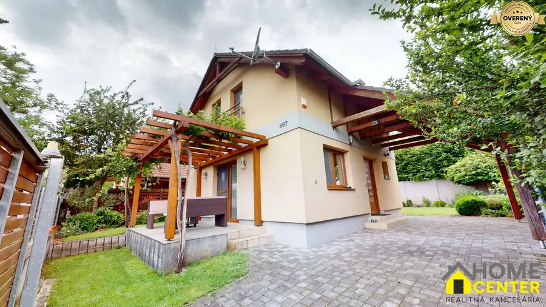
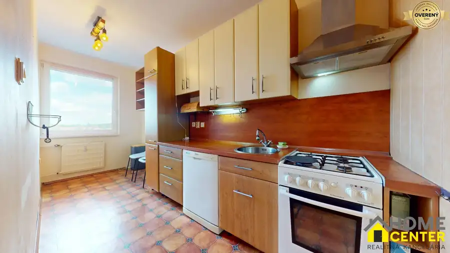
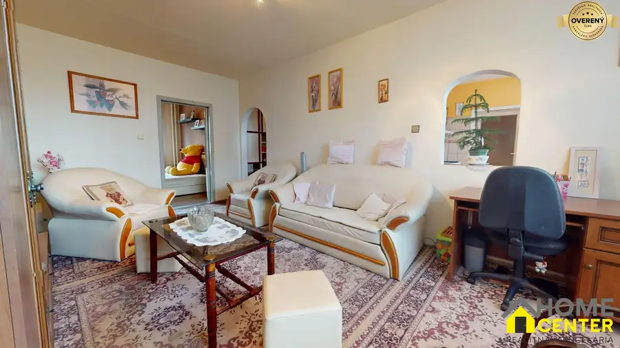
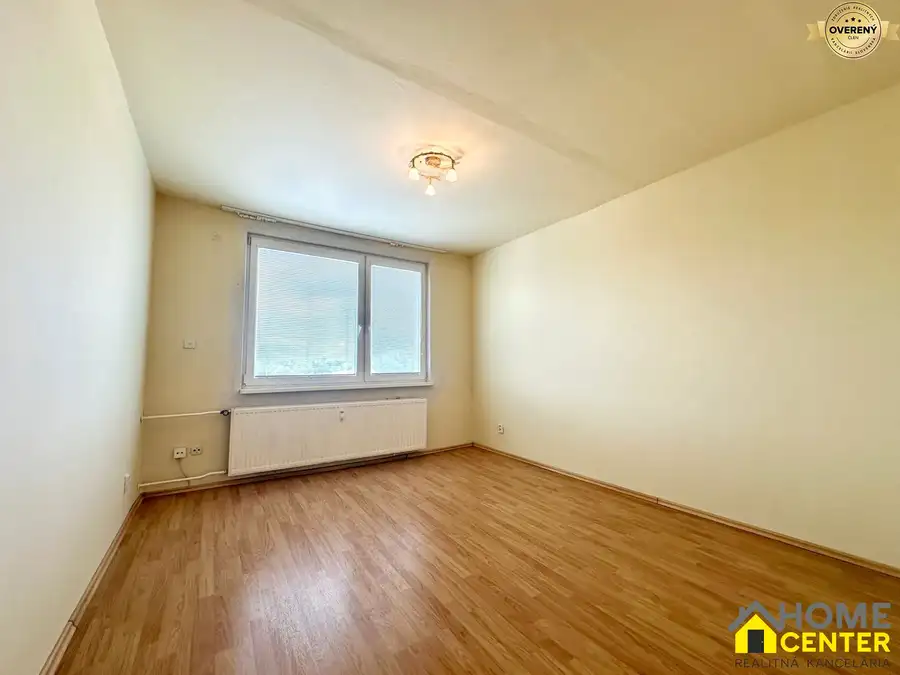
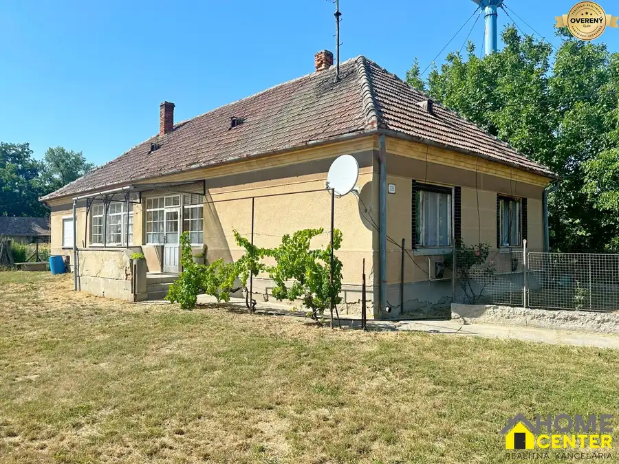
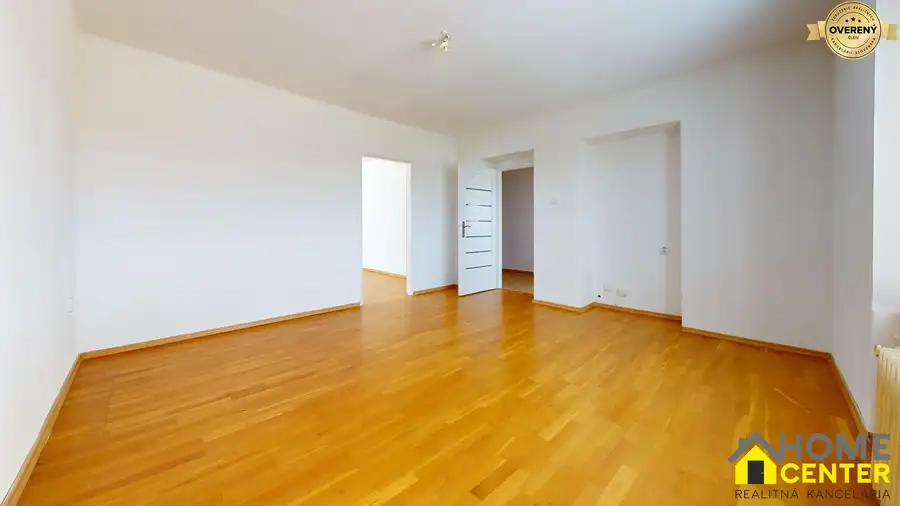
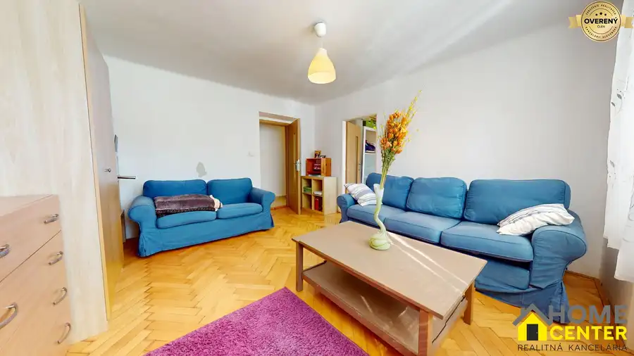
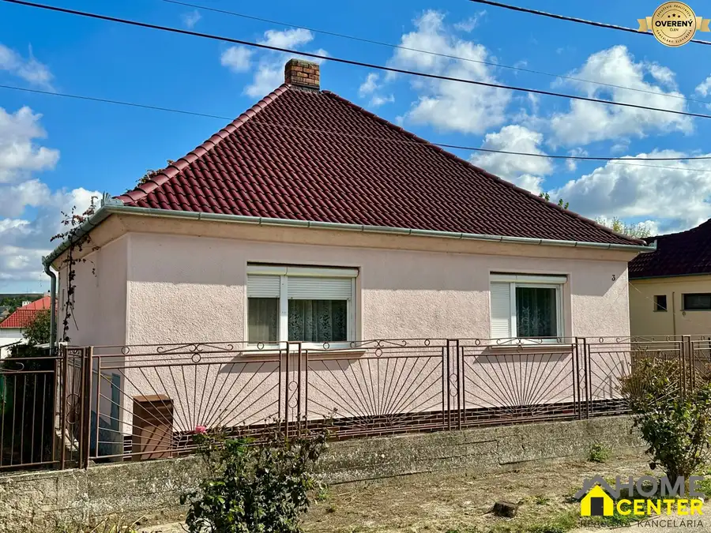
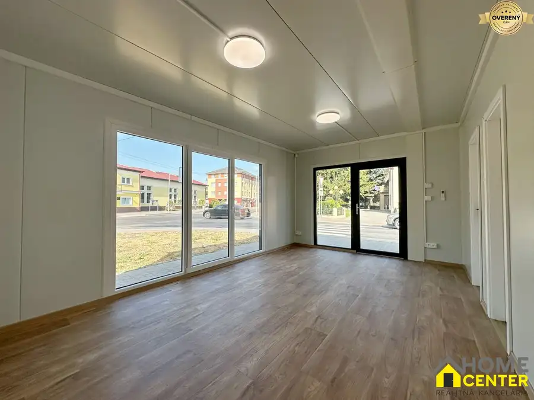
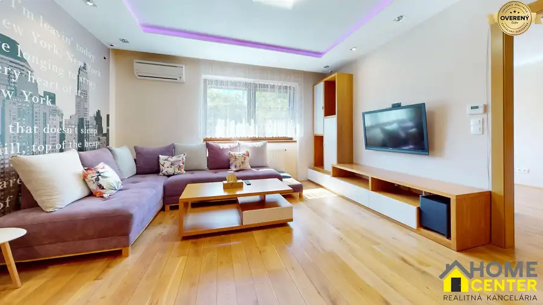

Aktuálna ponuka
Nehnuteľnosti, ktoré ponúkam
10 nehnuteľností na predaj a prenájom. Vyberte typ, alebo napíšte lokalitu.
10 z 10 ponúk

Chaty a chalupy10 180 000 €Na predaj krásna chata pri Dunaji, Moča, okres Komárno Moča 3-izbový85 m² Pozrite si profesionálnu 3D PREHLIADKU: https://my.matterport.com/show/?m=Uw7VUWtSm6p (skopírujte link do vyhľadávača) Csaba Őszi - realitný maklér…
Byt10 95 000 €Na predaj 3 izbový byt s loggiou na ul. gen. klapku, Komárno Komárno 3-izbový61 m²5. podlažie Csaba Őszi - realitný maklér pre Komárno a okolie Vám ponúkam na predaj slnečný 3 izbový byt v Komárne, na ul. gen. Klapku. Byt sa nachádza na 5.…
Byt10 109 900 €Na predaj 3 izbový byt na začiatku VII. sídliska, ul. palatínova Komárno 3-izbový72 m²2. podlažie POZRITE SI AJ 3D PREHLIADKU BYTU: https://my.matterport.com/models/m24uYujBL3U (stačí skopírovať link do webového prehliadača) Csaba Őszi - realitný…
Byt5 57 990 €Nová cena! na predaj Garsónka na VII. sídlisku, ul. bubnová, Komárno Komárno 1-izbový24 m²3. podlažie EXKLUZÍVNE IBA U MŇA! Csaba Őszi - realitný maklér pre Komárno a okolie Vám ponúkam na predaj slnečnú garsónku na perfektnom mieste, na ul. Bubnová v…
Rodinné domy10 65 000 €Na predaj rodinný dom na kľudnom, tichom mieste, Martovce Martovce 4-izbový155 m² Csaba Őszi - realitný maklér pre Komárno a okolie Vám ponúkam na predaj rodinný dom v v kľudnej, tichej uličke v obci Martovce. Dom sa nachádza na…
Byt10 105 000 €Nová cena!!! na predaj 2 izbový tehlový byt v centre, vnútorná okružná Komárno 2-izbový58 m²2. podlažie Pozrite si profesionálnu 3D PREHLIADKU: https://my.matterport.com/show/?m=5Rxnp2D2SWh (skopírujte link do vyhľadávača) Csaba Őszi - realitný maklér…
Byt10 79 000 €Na predaj zrekonštruovaný 2 izbový tehlový byt, ul. Budovateľská Komárno 2-izbový58 m²2. podlažie Csaba Őszi - realitný maklér pre okres Komárno Vám ponúkam na predaj ZREKONŠTRUOVANÝ 2 IZBOVÝ BYT na ulici Budovateľská, v Komárne. Byt sa nachádza v…
Rodinné domy10 77 000 €Na predaj 2 izbový rodinný dom s letnou kuchynkou, Dulovce Dulovce 2-izbový78 m² Csaba Őszi - realitný maklér pre Komárno a okolie Vám ponúkam na predaj podpivničený 2 izbový rodinný dom v tichej uličke v Dulovciach. Dom sa…
Nebytové priestory10 Cena dohodouNa prenájom priestor so 4 parkovacími státiami v centre, Veľký Meder Veľký Meder 36 m² Csaba Őszi - realitný maklér pre južné Slovensko Vám ponúkam na prenájom priestor vo výbornej lokalite pri frekventovanej hlavnej ceste Komárno –…
Byt10 Cena dohodouNa prenájom moderne zrekonštruovaný 3 izbový byt + garáž v centre Komárno 3-izbový67 m²1. podlažie Poprechádzajte sa po tomto krásnom, moderne zrekonštruovanom 3 izbovom byte vďaka 3D OBHLIADKE! Stačí len skopírovať nasledujúci link:…Tomuto výberu zatiaľ nezodpovedá žiadna ponuka. Napíšte mi, čo hľadáte.